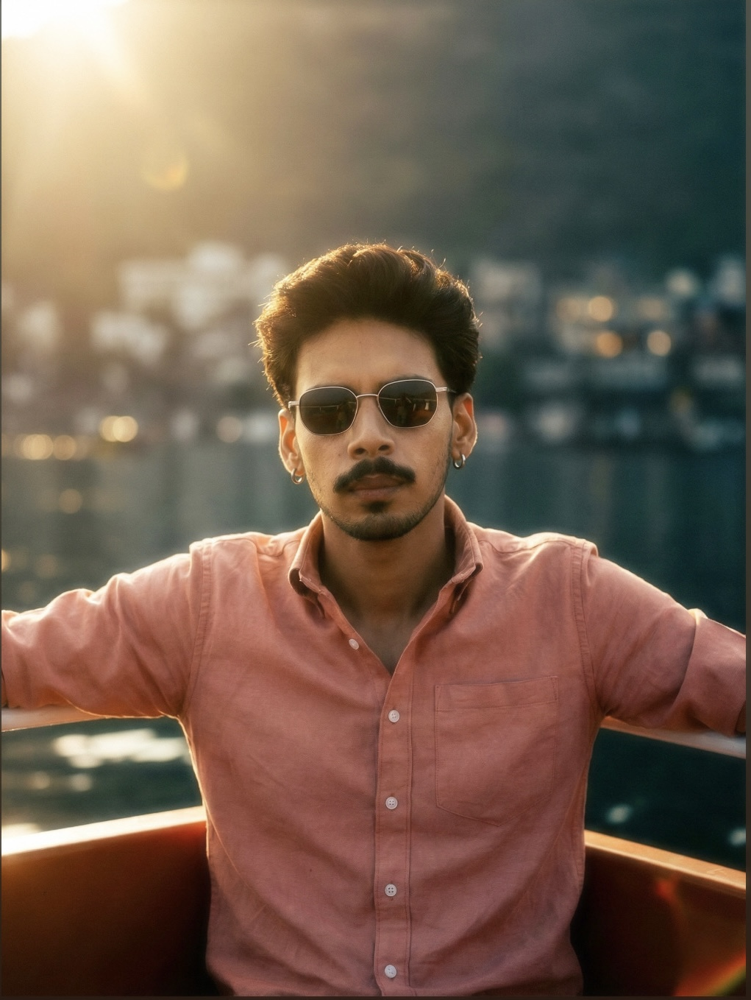

I am a MERN Stack Developer with a deep interest in building high-performance web applications. With a strong foundation in JavaScript (ES6+), I specialize in creating full-stack solutions that are both scalable and efficient.
My Core Technical Toolkit:
- Frontend : React.js, Redux, HTML5, CSS3, Tailwind CSS, Bootstrap.
- Backend : Node.js, Express.js.
- Database : MongoDB, Mongoose.
- Tools : Git, GitHub.
I enjoy the process of taking a project from a blank screen to a fully functional, deployed application. I am a firm believer in "learning by doing" and am constantly exploring new libraries and frameworks to stay at the forefront of the industry. I'm currently looking for opportunities where I can contribute to meaningful projects and collaborate with a forward-thinking team